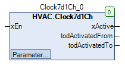
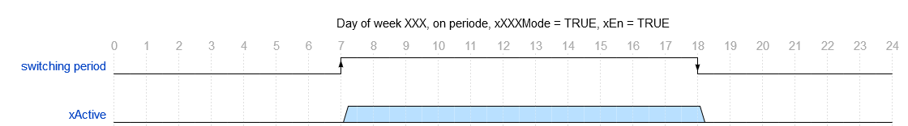
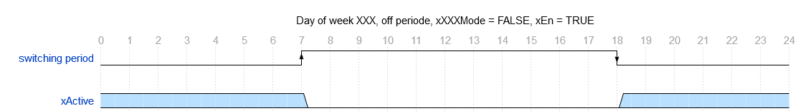
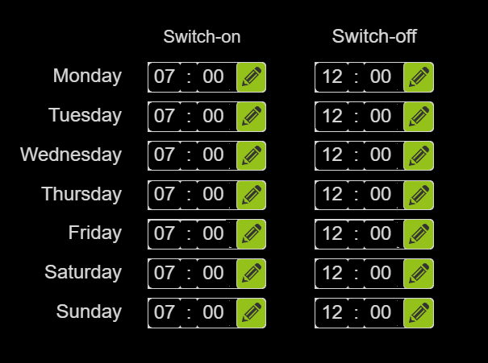
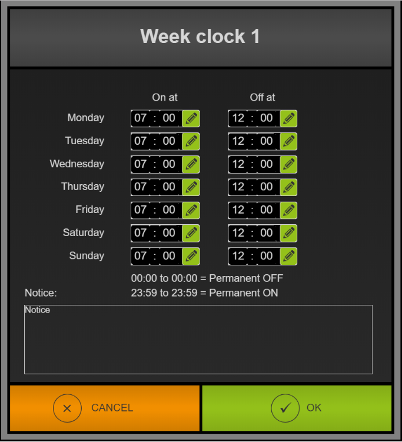

Clock7d1Ch (FB)¶
FUNCTION_BLOCK Clock7d1Ch
Kurzbeschreibung¶
Schaltuhr mit 7 Wochentagen, je einem Ein-/Ausschaltzeitpunkt und binärem Gesamtausgang.Die Funktionsweise ( Einschaltperiode oder Ausschaltperiode ) ist pro Wochentag definierbar.Typische Anwendung: Festlegung des Nacht- / Tagbetriebs einer Zonentemperaturregelung
Darstellung¶

Schnittstellen¶
Eingänge¶
Name Datentyp Wertebereich Initialwert Funktion xEn BOOL Freigabeeingang
Ausgänge¶
Name Datentyp Wertebereich Initialwert Funktion xActive BOOL Anzeige aktiver Schaltperioden todActivatedFrom TOD Einschaltzeitpunkt des aktuellen Wochentags todActivatedTo TOD Ausschaltzeitpunkt des aktuellen Wochentags
Sollwerte / Parameter¶
Name Datentyp Wertebereich Initialwert Funktion todMonFrom TOD TOD#07:00 Einschaltzeitpunkt - Montag todMonTo TOD TOD#12:00 Ausschaltzeitpunkt - Montag xMonMode BOOL TRUE Modus - Schaltperiode - Montag todTueFrom TOD TOD#07:00 Einschaltzeitpunkt - Dienstag todTueTo TOD TOD#12:00 Ausschaltzeitpunkt - Dienstag xTueMode BOOL TRUE Modus - Schaltperiode - Dienstag todWedFrom TOD TOD#07:00 Einschaltzeitpunkt - Mittwoch todWedTo TOD TOD#12:00 Ausschaltzeitpunkt - Mittwoch xWedMode BOOL TRUE Modus - Schaltperiode - Mittwoch todThuFrom TOD TOD#07:00 Einschaltzeitpunkt - Donnerstag todThuTo TOD TOD#12:00 Ausschaltzeitpunkt - Donnerstag xThuMode BOOL TRUE Modus - Schaltperiode - Donnerstag todFriFrom TOD TOD#07:00 Einschaltzeitpunkt - Freitag todFriTo TOD TOD#12:00 Ausschaltzeitpunkt - Freitag xFriMode BOOL TRUE Modus - Schaltperiode - Freitag todSatFrom TOD TOD#07:00 Einschaltzeitpunkt - Samstag todSatTo TOD TOD#12:00 Ausschaltzeitpunkt - Samstag xSatMode BOOL TRUE Modus - Schaltperiode - Samstag todSunFrom TOD TOD#07:00 Einschaltzeitpunkt - Sonntag todSunTo TOD TOD#12:00 Ausschaltzeitpunkt - Sonntag xSunMode BOOL TRUE Modus - Schaltperiode - Sonntag sNotice STRING ‘Notice’ Bezeichnung - Schaltuhr
Funktionsbeschreibung¶
Allgemeines¶
Wochentage 1 - 7 ( Montag ... Sonntag, XXX = Mon, Tue, Wed, Thu, Fri, Sat, Sun )¶
Jedem der sieben Wochentage ist eine eigene Schaltperiode zugeordnet.
Jede Schaltperiode ist durch einstellbare Daten ( Einschaltzeitpunkt todXXXTimeFrom und Ausschaltzeitpunkt todXXXTimeTo ) definiert.
Zusätzlich kann eine Betriebsart ( xXXXMode ) pro Wochentag festgelegt werden.
Liegt der Ausschaltzeitpunkt vor dem Einschaltzeitpunkt, so wird für die Prüfung der Ausschaltzeitpunkt auf den Wert des Einschaltzeitpunkts gelegt.
Eine Schaltperiode ist aktiv, falls sich die aktuelle Uhrzeit am Wochentag XXX innerhalb der Schaltperiode des Wochentag XXX befindet ( xXXXMode = TRUE ).
Eine Schaltperiode ist aktiv, falls sich die aktuelle Uhrzeit am Wochentag XXX ausserhalb der Schaltperiode des Wochentag XXX befindet ( xXXXMode = FALSE ).
Sonderfall 1: Einschaltzeitpunkt = Ausschaltzeitpunkt = TOD#00:00
Bei aktiver Einschaltperiode ( xXXXMode = TRUE ) ist die Schaltperiode ganztägig nicht aktiv.
Bei aktiver Ausschaltperiode ( xXXXMode = FALSE ) ist die Schaltperiode ganztägig aktiv.
Sonderfall 2: Einschaltzeitpunkt = Ausschaltzeitpunkt = TOD#23:59
Bei aktiver Einschaltperiode ( xXXXMode = TRUE ) ist die Schaltperiode ganztägig aktiv.
Bei aktiver Ausschaltperiode ( xXXXMode = FALSE ) ist die Schaltperiode ganztägig nicht aktiv.
Voraussetzung für den Einsatz des Funktionsbausteins Clock7d1Ch
Zur korrekten Funktion ist der Einsatz des Funktionsbausteins TimeRead mit xEn = TRUE erforderlich.
Einschaltperiode¶
Ausschaltperiode¶
Freigabeeingang xEn¶
xEn xActive todActivatedFrom todActivatedTo Hinweis FALSE FALSE unverändert unverändert FB deaktiviert TRUE Zustand abhängig vom Wochentag, der Uhrzeit und der Schaltperiode Einschaltzeitpunkt der Schaltperiode des aktuellen Wochentags Ausschaltzeitpunkt der Schaltperiode des aktuellen Wochentags FB aktiviert
Anzeigeausgang xActive¶
Der Anzeigeausgang xActive nimmt den Zustand TRUE an, falls bei aktivem Freigabeeingang ( xEn = TRUE ) die Uhrzeit am Wochentag XXX
innerhalb der Schaltperiode des Wochentags XXX liegt ( xXXXMode = TRUE, Einschaltperiode ).
Der Anzeigeausgang xActive nimmt den Zustand TRUE an, falls bei aktivem Freigabeeingang ( xEn = TRUE ) die Uhrzeit am Wochentag XXX
außerhalb der Schaltperiode des Wochentags XXX liegt ( xXXXMode = FALSE, Ausschaltperiode ).
In allen übrigen Fällen nimmt der Anzeigeausgang xActive den Zustand FALSE an.
xEn xActive Schaltperiode XXX xXXXMode - XXX Hinweis FALSE FALSE X X FB deaktiviert TRUE FALSE FALSE TRUE Einschaltperiode nicht aktiv TRUE TRUE TRUE TRUE Einschaltperiode aktiv TRUE TRUE FALSE FALSE Ausschaltperiode nicht aktiv TRUE FALSE TRUE FALSE Ausschaltperiode aktiv
Einschaltzeitpunkt der Schaltperiode des aktuellen Wochentags todActivatedFrom¶
Dieser Ausgang zeigt permanent den Einschaltzeitpunkt der Schaltperiode des aktuellen Wochentags an, falls der Freigabeeingang ( xEn = TRUE ) aktiv ist.
In allen übrigen Situationen wird er nicht verändert. In den Sonderfällen 1 und 2 wird stets der Wert TOD#00:00 angezeigt.
Ausschaltzeitpunkt der Schaltperiode des aktuellen Wochentags todActivatedTo¶
Dieser Ausgang zeigt permanent den Ausschaltzeitpunkt der Schaltperiode des aktuellen Wochentags an, falls der Freigabeeingang ( xEn = TRUE ) aktiv ist.
In allen übrigen Situationen wird er nicht verändert. Im Sonderfall 1 wird stets der Wert TOD#00:00, im Sonderfall 2 der Wert TOD#23:59 angezeigt.
Visualisierung¶
Passendes Visualisierungselement aus der HVACV Visu Library: FB_Clock7d1Ch
Darstellung¶

Schnittstellen Visu-Element¶
Name Datentyp Typ Initialwert Funktion FB_Clock7d1Ch Clock7d1Ch VAR_IN_OUT Hier FB Clock7d1Ch eintragen Bsp. PRG.Clock7d1Ch
Oder Visuelement Clock7d1Ch_D als Dialog. Aufruf des Dialogs z.B. über das Viuelement Clock7d1Ch_Button

Schnittstellen Visu-Element¶
Name Datentyp Typ Initialwert Funktion FB_Clock7d1Ch Clock7d1Ch VAR_IN_OUT Hier FB Clock7d1Ch eintragen Bsp. PRG.Clock7d1Ch ClockNumber INT VAR_INPUT Uhrnummer. Nur für die Anzeige des Titels verwendet. BMS_Active BOOL VAR_INPUT BMS (Building Management System) GLT (Gebäudeleittechnik). Wenn BMS_Active = TRUE wird die Eingabe/Editierung der Uhren deaktiviert da diese dann nur über das BMS eingestellt werden können. Uhrzeiten können dann nur angeschaut werden. DisableInput BOOL VAR_INPUT DisableInpput = TRUE Uhrzeiten der Wochenuhren können nur angesehen werden und nicht editiert werden.
Hinweis: VAR_IN_OUT Schnittstellen müssen belegt werden, VAR_INPUT sind optional.
Codesys¶
- InOut:
Scope Name Type Initial Comment Input xEn BOOL Freigabeeingang todMonFrom TOD TIME_OF_DAY#7:0 Einschaltzeitpunkt - Montag todMonTo TOD TIME_OF_DAY#12:0 Ausschaltzeitpunkt - Montag xMonMode BOOL TRUE Modus - Schaltperiode - Montag todTueFrom TOD TIME_OF_DAY#7:0 Einschaltzeitpunkt - Dienstag todTueTo TOD TIME_OF_DAY#12:0 Ausschaltzeitpunkt - Dienstag xTueMode BOOL TRUE Modus - Schaltperiode - Dienstag todWedFrom TOD TIME_OF_DAY#7:0 Einschaltzeitpunkt - Mittwoch todWedTo TOD TIME_OF_DAY#12:0 Ausschaltzeitpunkt - Mittwoch xWedMode BOOL TRUE Modus - Schaltperiode - Mittwoch todThuFrom TOD TIME_OF_DAY#7:0 Einschaltzeitpunkt - Donnerstag todThuTo TOD TIME_OF_DAY#12:0 Ausschaltzeitpunkt - Donnerstag xThuMode BOOL TRUE Modus - Schaltperiode - Donnerstag todFriFrom TOD TIME_OF_DAY#7:0 Einschaltzeitpunkt - Freitag todFriTo TOD TIME_OF_DAY#12:0 Ausschaltzeitpunkt - Freitag xFriMode BOOL TRUE Modus - Schaltperiode - Freitag todSatFrom TOD TIME_OF_DAY#7:0 Einschaltzeitpunkt - Samstag todSatTo TOD TIME_OF_DAY#12:0 Ausschaltzeitpunkt - Samstag xSatMode BOOL TRUE Modus - Schaltperiode - Samstag todSunFrom TOD TIME_OF_DAY#7:0 Einschaltzeitpunkt - Sonntag todSunTo TOD TIME_OF_DAY#12:0 Ausschaltzeitpunkt - Sonntag xSunMode BOOL TRUE Modus - Schaltperiode - Sonntag sNotice STRING ‘Notice’ Bezeichnung - Schaltuhr Output xActive BOOL Anzeige aktiver Schaltperioden todActivatedFrom TOD Einschaltzeitpunkt des aktuellen Wochentags todActivatedTo TOD Ausschaltzeitpunkt des aktuellen Wochentags